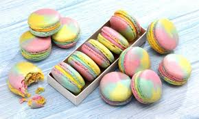

A macaroon (/mækəˈruːn/ mak-ə-ROON) is a small biscuit or cookie, typically made from ground almonds (the original main ingredient[1]), coconut or other nuts (or even potato), with sugar and sometimes flavorings (e.g. honey, vanilla, spices), food coloring, glace cherries, jam or a chocolate coating[2] – or a combination of these or other ingredients. Some recipes call for sweetened condensed milk.[3][4] Macaroons are sometimes baked on edible rice paper placed on a baking tray.The name "macaroon" comes from the Italian maccarone or maccherone meaning "paste", referring to the original almond paste ingredient; this word itself derives from ammaccare, meaning "to crush".[5]Culinary historians write that macaroons can be traced to an Italian monastery of the 8th or 9th century. The monks came to France in 1533, joined by the pastry chefs of Catherine de Medici, wife of King Henri II. Later, two Benedictine nuns, Sister Marguerite and Sister Marie-Elisabeth, came to Nancy seeking asylum during the French Revolution. The two women paid for their housing by baking and selling macaroon cookies, and thus became known as the "Macaroon Sisters".[6] Italian Jews later adopted the cookie because it has no flour or leavening (macaroons are leavened by egg whites) and can be eaten during the eight-day observation of Passover. It was introduced to other European Jews and became popular as a year-round sweet.[6] Recipes for macaroons (also spelled "mackaroon", "maccaroon" and "mackaroom") appear in recipe books at least as early as 1725 (Robert Smith's Court Cookery, or the Complete English Cook), and use egg whites and almond paste. Mrs Beeton's Book of Household Management[7] includes a typical traditional recipe. Over time, coconut was added to the ground almonds and, in certain recipes, replaced them. Potato starch is also sometimes included in the recipe, to give the macaroons more body.  Dominican Republic Macaroons in the Dominican Republic are very dark. Grated coconut is mixed with ginger and cinnamon. France The coconut macaroon is known as the "Congolais",[8][9] or "le rocher à la noix de coco". India Main article: Thoothukudi macaroon, famously "Macroons" Thoothukudi in Tamil Nadu and Mangaluru in Karnataka have their own varieties of macaroon made with cashews and egg whites, adapted from those introduced in colonial times.[10] Ireland A macaroon chocolate bar is made by Wilton Candy in Co. Kildare, Ireland. The description on the packaging is "macaroon pieces in Irish milk chocolate." It was first made in 1937.[11] Cleeve's Irish Confectionery also make a macaroon chocolate bar - ingredients include cocoa butter, milk powder and desiccated coconut. Italy Ricciarelli are a soft almond variety originating from Siena. Amaretti di Saronno are a usually crunchy variety from Saronno. Both are often served on special occasions such as Christmas. Philippine coconut macaroons Philippine coconut macaroons are uniquely cake-like in texture. They are slightly crunchy on the outside and soft, moist, and chewy on the inside. They are usually baked into colorful tiny cupcake wrappers and topped with a raisin. They are popular during holidays and special occasions.[12][13][14] Puerto Rico In Puerto Rico, coconut macaroons are called besitos de coco (little coconut kisses). A few variations of besitos de coco can be found on the island, the most popular ones including lemon zest and vanilla as additional ingredients. Scotland Macaroon chocolate bars are also popular in Scotland. Buchanan's make a macaroon with Belgian chocolate and toasted coconut. They are a long-established family business based in Greenock. Buchanan's Macaroon Bar Spain The carajito is a macaroon variant made with hazelnuts and honey from the town of Salas, Asturias in northern Spain.[15][16] A larger size version is commonly known as sultana or suspiros del moro. Turkey Acıbadem kurabiyesi is a traditional Turkish variety made of almonds, sugar and egg whites. The traditional recipes include a small amount of bitter almonds, which gives this cookie its name. Because bitter almonds are not readily available, almond extract is typically used as a substitute. These cookies are part of the stock-in trade of almost every bakery in Turkey, as they are seldom made at home. United Kingdom In Britain generally, the traditional almond macaroon often includes almond essence to strengthen the flavour, and is topped with an almond flake. Coconut macaroons are also popular. In Scotland, the Scottish macaroon has a dense, sugary centre and is covered in chocolate and roasted coconut. Traditionally they were made with cold leftovers of mashed potatoes and sugar loaf. When the macaroon bar became commercial the recipe no longer used mashed potato because of shelf life limitations. The modern macaroon is made from a combination (depending on producer) of sugar, glucose, water and egg white. These ingredients make a fondant centre. This recipe was reportedly discovered by accident in Coatbridge in 1931, when confectioner John Justice Lees was said to have botched the formula for making a chocolate fondant bar and threw coconut over it in disgust, producing the first macaroon bar.[17] United States Coconut macaroons Coconut macaroon is the best known variety in America. Commercially made coconut macaroons are generally dense, moist and sweet, and often dipped in chocolate. Homemade macaroons and varieties produced by smaller bakeries are commonly light and fluffy. Macaroons made with coconuts are often piped out with a star shaped tip, whereas macaroons made with nuts are more likely shaped individually due to the stiffness of the dough. Because of their lack of wheat and leavening ingredients, macaroons are often consumed during Passover in many Jewish homes.